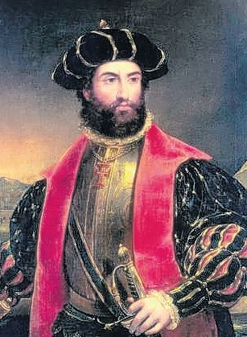

O descobrimento do Brasil em 1500 ocorreu em um contexto histórico marcado pela chamada “Era das Grandes Descobertas” ou “Era dos Descobrimentos”. Esse período, que abrange os séculos XV e XVI, foi caracterizado pela intensa exploração marítima empreendida por várias nações europeias, com o objetivo de expandir seus horizontes, conquistar novas terras e encontrar rotas comerciais mais vantajosas.
A busca por rotas comerciais para o Oriente era uma das principais motivações das viagens marítimas. Na época, o comércio de especiarias, seda, porcelana e outros produtos do Oriente era altamente lucrativo, mas o acesso a essas mercadorias era dificultado por rotas terrestres controladas por impérios, em especial, pelo Império Otomano. As nações europeias almejavam encontrar rotas marítimas alternativas para evitar intermediários e obter lucros diretos.
Portugal estava na vanguarda dessa empreitada. Sob o patrocínio de líderes como o Infante Dom Henrique, também conhecido como o Navegador, Portugal desenvolveu uma sólida tradição de exploração marítima. O estabelecimento da Escola de Sagres, no sul de Portugal, serviu como centro de pesquisa e treinamento para marinheiros, estimulando o desenvolvimento de tecnologias de navegação e aprimorando o conhecimento geográfico.
A concorrência entre as nações europeias, especialmente Portugal e Espanha, desempenhou um papel crucial nesse período. A Espanha havia financiado as viagens de Cristóvão Colombo, que levaram à descoberta das Américas em 1492, o que impulsionou ainda mais a busca por terras desconhecidas. A competição territorial, o acesso a recursos naturais e a expansão do poder e influência também motivaram as viagens.
O contexto histórico das Grandes Descobertas moldou o cenário no qual Pedro Álvares Cabral e sua frota partiram de Portugal em 1500, em busca de novas terras e rotas comerciais. A chegada ao que hoje conhecemos como Brasil marcou um episódio crucial nessa era de exploração, estabelecendo um ponto de contato entre o Velho e o Novo Mundo, que teria repercussões profundas na história global.
A expedição liderada por Pedro Álvares Cabral, que partiu de Portugal em março de 1500, é um dos eventos mais emblemáticos da Era das Grandes Descobertas. Sua missão original era seguir a rota de Vasco da Gama para as Índias, contornando o sul da África. No entanto, devido a uma série de fatores, incluindo desvios de curso, tempestades e correntes oceânicas, a frota de Cabral acabou chegando a uma terra desconhecida em 22 de abril de 1500.
A expedição de Cabral consistia em 13 navios e cerca de 1.500 homens, incluindo marinheiros experientes, soldados e sacerdotes. A frota seguiu uma rota pelo Atlântico, que os levou a avistar o que hoje conhecemos como Brasil, mais especificamente a região da Bahia. O local exato do desembarque é motivo de debate, mas acredita-se que tenha ocorrido em Porto Seguro.
A chegada ao Brasil pegou a tripulação de surpresa, pois as terras que avistaram não estavam marcadas em seus mapas. Essa “descoberta” foi recebida com surpresa e curiosidade, e as primeiras impressões dos portugueses sobre a nova terra incluíam a beleza da paisagem tropical, a exuberância da vegetação e a estranheza das culturas indígenas que encontraram.
Após a chegada ao Brasil, Cabral enviou uma expedição para estabelecer relações com os povos indígenas locais. As interações iniciais variaram de amigáveis a hostis, dependendo da tribo e da região. Houve trocas comerciais, com os indígenas fornecendo alimentos, materiais e conhecimentos sobre a fauna e flora locais em troca de itens como espelhos, tecidos e ferramentas. No entanto, confrontos também ocorreram devido a diferenças culturais e desentendimentos.
A expedição de Cabral é um evento de importância monumental na história do Brasil e do mundo. Marcou o início da colonização portuguesa do Brasil e teve consequências profundas para a história, a cultura e a sociedade brasileira. A “descoberta” do Brasil por Cabral estabeleceu as bases para a formação do país como o conhecemos hoje e é um evento fundamental na história do Brasil.